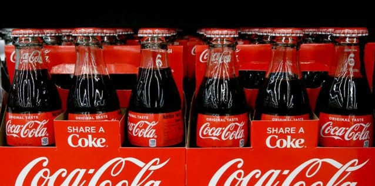

Coca-Cola : Big Data for Customer Acquisition and Retention
In the year 2015, Coca-Cola managed to strengthen its data strategy by building a digital-led loyalty program. Data plays an increasingly important role in marketing and product development. Consumers do a great job of sharing their opinions with them – either by phone, email or social networks – that allow them to hear their voice and adjust their approach.